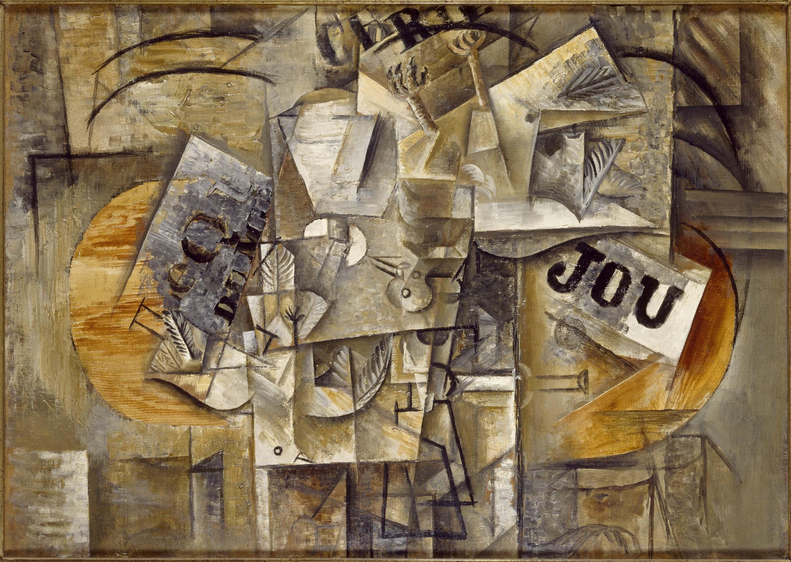
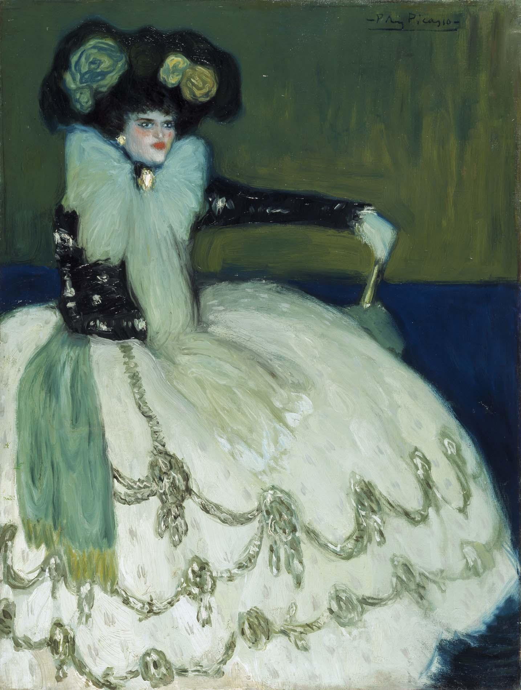
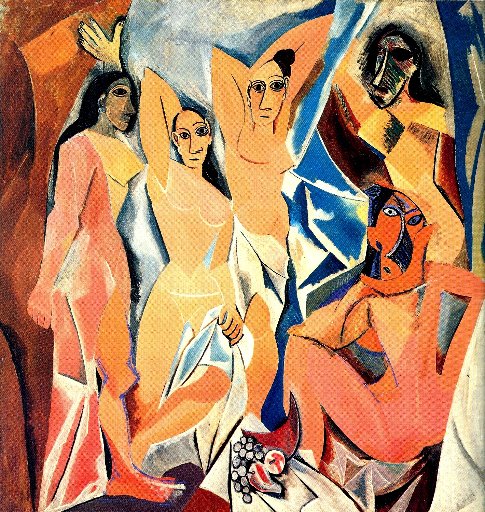

Museo Reina Sofia
Hier findest du Picassos Werke, die im Museo Reina Sofia zu finden sind.
Guernica

Les oiseaux morts (Toter Vogel)
Mujier en azul (Frau in Blau)
Picasso

Zeichnung

Frauen von Algier

Senoritas de Avignon
Zeichnung

Das Museo Nacional Centro de Arte Reina Sofía, kurz MNCARS, ist ein Kunstmuseum, Pinakothek und Bibliothek, in Madrid gelegen. Das spanische Nationalmuseum Zentrum der Künste Königin Sofia wurde am 10. September 1992 durch die namensgebende spanische Königin Sofia gemeinsam mit König Juan Carlos I. eingeweiht.
Mehr über Museo Reina Sofia